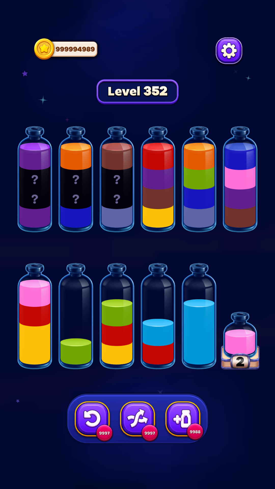
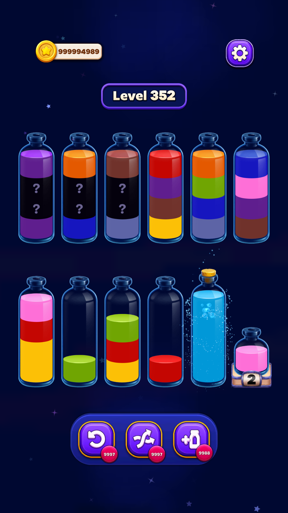
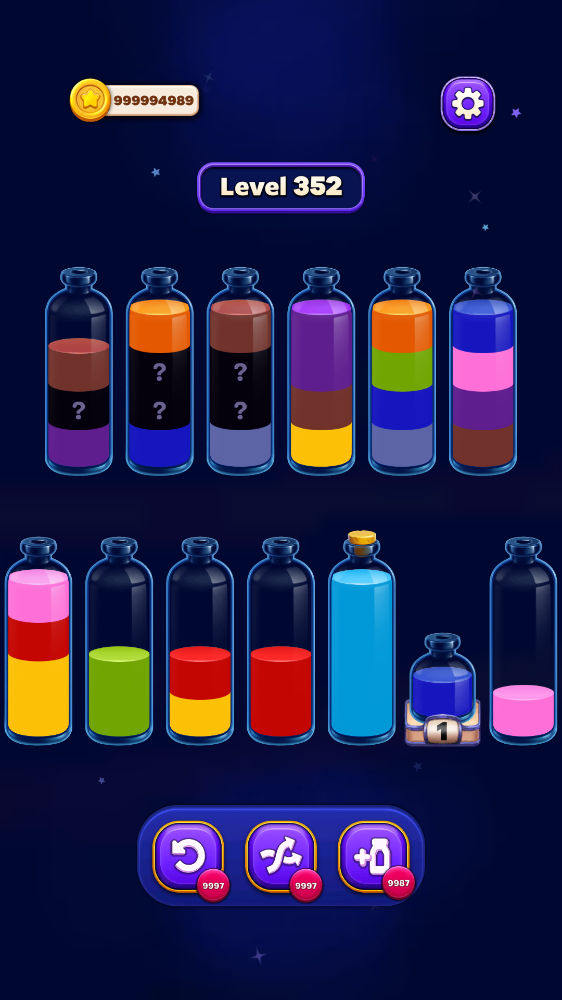
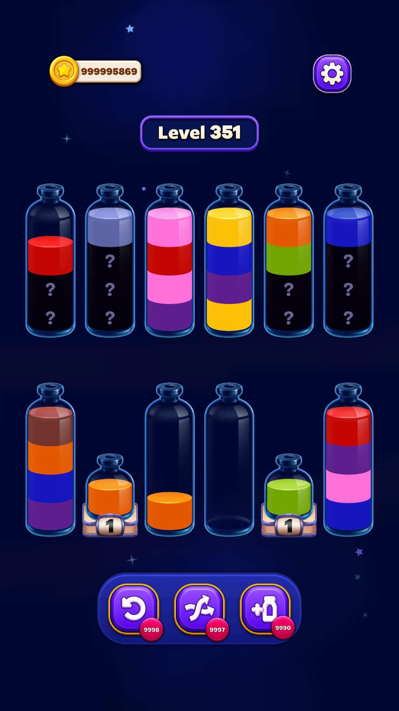
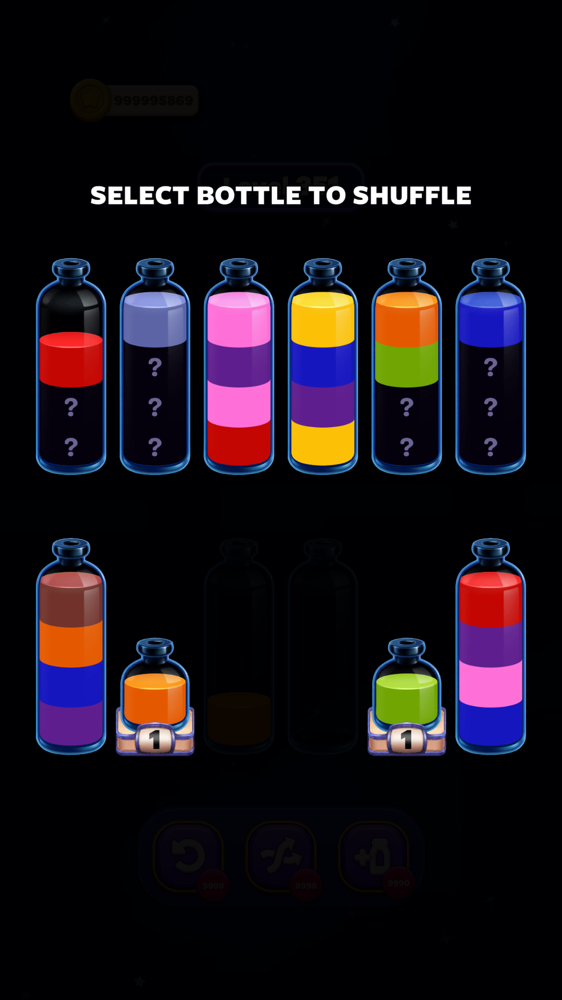
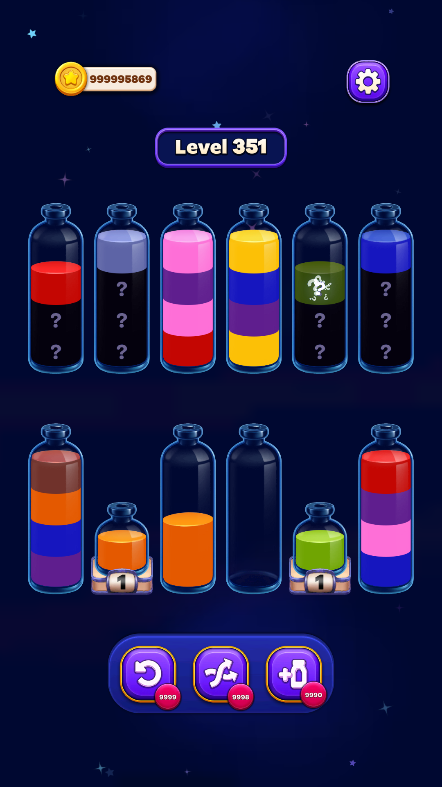
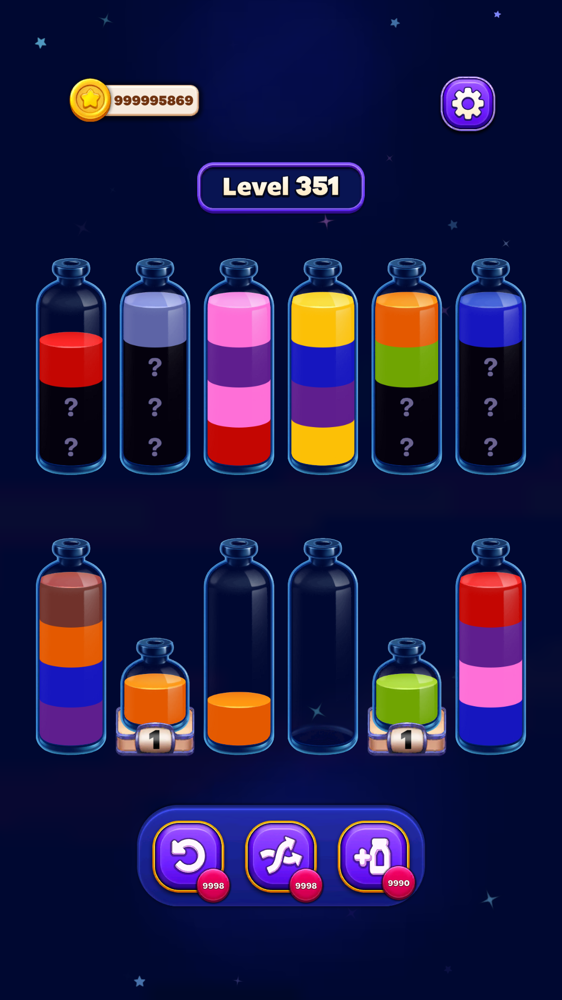

Booster trong màn chơi (Boosters)
Booster là các vật phẩm dùng ngay trong bàn để gỡ thế bí. Magic Sort có 5 loại: Undo (hoàn tác nước đi), Shuffle (xáo lại một chai do người chơi chọn), Extra Bottle (thêm một chai rỗng), Mega Shuffle (trộn lại toàn bộ bàn) và Reveal (lộ/loại bỏ vật cản trên một chai). Ba booster đầu là bộ cơ bản, mở khoá cùng lúc ở level 15 và người chơi được tặng 3 cái mỗi loại khi mới cài. Ô booster thứ tư trong thanh dưới màn hình là chỗ AB test: tuỳ RootLevelConfigModel.InGameBoosterVariant mà hiện Reveal hoặc Mega Shuffle (hoặc không hiện, chỉ 3 booster). Mỗi booster đều theo mô hình 'có hàng thì dùng, hết hàng thì mua ngay bằng coin' — BoosterButton hiển thị số lượng còn (BoosterInventoryView) hoặc giá (BoosterPurchaseView) và dùng item trước, thiếu item mới xét coin; riêng Shuffle/Reveal phải chọn được chai hợp lệ mới trừ, huỷ chế độ chọn không mất item/coin. Khi thiếu cả item lẫn coin, luồng mua có thể mở Store. Ngoài ra, các booster tương tự còn được phát miễn phí qua Play On khi bàn kẹt (xem LevelFlow) và làm phần thưởng vạc của level Hard/Super Hard.
4 UC có nhánh liên quan tới case quan sát. Chưa có kết luận toàn bộ tính năng hoặc mọi UC đã pass. Xem bằng chứng và phần còn thiếu.
Tổng quan & điều kiện mở
Mô tả
- Magic Sort có 5 booster: Undo hoàn tác nước đi, Shuffle xáo lại một chai được chọn, Extra Bottle thêm một chai rỗng, Mega Shuffle trộn toàn bộ bàn và Reveal gỡ vật cản trên một chai.
- Ba booster cơ bản (Undo, Shuffle, Extra Bottle) mở khóa cùng lúc ở level 15.
- Ô booster thứ tư trong thanh dưới màn hình là chỗ AB test: hiện Reveal, hiện Mega Shuffle, hoặc không hiện gì.
- Mọi booster đều theo mô hình 'có hàng thì dùng, hết hàng thì mua ngay bằng coin' — bấm là trừ coin luôn, không mở cửa hàng trung gian.
- Nút booster hiển thị số lượng còn (BoosterInventoryView) hoặc giá (BoosterPurchaseView) tùy kho đồ.
- Shuffle và Reveal cần chọn chai: màn hình làm mờ nền, hiện hướng dẫn và hai nút hủy.
- Mega Shuffle dùng thuật toán dựng bàn ảo, đảo khối màu và cố ép trống hẳn một chai.
- Booster tương tự còn được phát miễn phí qua Play On khi bàn kẹt và làm phần thưởng vạc của level Hard/Super Hard.
- Mỗi loại booster khi xuất hiện lần đầu mở NewBoosterIntroductionPopup dạy công dụng, chỉ một lần.
- Reveal và Mega Shuffle còn có tutorial riêng dẫn tay người chơi bấm lần đầu.
Mở khóa & điểm vào
Undo, Shuffle và Extra Bottle mở khoá ở level 15 (GameEconomyModel.UndoUnlockAtLevel / ShuffleUnlockAtLevel / ExtraBottleUnlockAtLevel = 15, client default). Booster thứ tư (Reveal hoặc Mega Shuffle) bật bằng RootLevelConfigModel.InGameBoosterVariant, riêng Reveal còn cần RootLevelConfigModel.IsRevealBoosterEnabled; InventoryService.GiveFourthBoosterIfEnabled tặng số lượng khởi điểm khi tính năng được bật. Mỗi booster khi xuất hiện lần đầu sẽ mở NewBoosterIntroductionPopup (BoosterManager.TryIntroduceNewBooster).
Điểm vào:
- Thanh booster dưới bàn chơi (BoosterButton / BoosterButtonWithBottleSelection / FourthInGameBoosterView)
- StuckPopup — nhận booster qua Play On bằng coin hoặc quảng cáo
- Phần thưởng vạc của level Hard/Super Hard (CauldronReward)
- Cửa hàng, gói IAP, phần thưởng sự kiện (InventoryService.Earn với CurrencyEarnReason tương ứng)
Luồng chi tiết theo nguồn
Cách hoạt động
- GamePlayContextInstaller dựng BoosterManager với SelectionSystem, BottleCollections, GameplayInputSystem và LevelWinOrStuckSystem.
- Mỗi BoosterButton gắn một CurrencyType; OnEnable đăng ký sự kiện đổi kho đồ, UpdateView chọn hiện số lượng (amount > 0) hay giá (amount = 0).
- FourthInGameBoosterView.OnEnable bật _revealParent hoặc _megaShuffleParent và chọn bố cục 3 hay 4 nút theo RootLevelConfigModel.InGameBoosterVariant.
- Bấm nút: TryUseBooster(currencyType) kiểm CanUseBooster — bàn phải dừng cộng điều kiện riêng của từng booster.
- UseBooster trừ vật phẩm trong kho, hoặc nếu hết thì kiểm DoesEnoughVisibleCurrency(Coin, price) rồi Spend(CurrencySpendReason.Boosters = 1, Coin, price).
- Undo (
 300 coin): SelectionSystem.ReverseLastSelection() trả nước đi cuối; BoosterStats.IncreaseUndoUsage(), LevelStats ghi undo_used.
300 coin): SelectionSystem.ReverseLastSelection() trả nước đi cuối; BoosterStats.IncreaseUndoUsage(), LevelStats ghi undo_used. - Shuffle (300 coin): phát tín hiệu hiện BottleSelectionBackground với chữ 'SELECT BOTTLE TO SHUFFLE', GameplayInputSystem.WaitForSelection(InputMode.BottleSelection = 2) chờ chọn chai.
- Chọn xong: CanUseShuffleBooster(bottleItem) kiểm hợp lệ rồi BottleItem.Shuffle(colorOrders) đảo thứ tự màu trong chai.
- Reveal (900 coin): tương tự Shuffle nhưng chữ 'SELECT TO REMOVE OBSTACLE'; BottleItem.Reveal() gọi GetHighestPriorityBlocker().OnRevealPerformed() và RevealBottleCells() lộ các ô dấu hỏi.
- Extra Bottle (900 coin): GetExtraBottleIndex() tìm chỗ trống rồi BottleCollection.AddExtraBottle(delay); BottlePositionAdjuster và camera căn lại bố cục.
- Mega Shuffle (900 coin): FindAvailableBottleForMegaShuffle() loại chai không trộn được, GetColorBlocks() tách nội dung thành khối màu, AddExcludedColors() loại màu trùng đỉnh và màu khớp Tag.
- BuildVirtualBoardFromColorBlocksRandom() dựng bàn ảo, ShuffleColorBlocks và ShuffleBlocksInBottle đảo thứ tự, MinimizeOneBottle() cố ép trống hẳn một chai (_megaShuffleEmptyOneBottle = true).
- Bàn kết quả không hợp lệ thì lặp lại tối đa MegaShuffleRetryCount lần (server); thành công thì PlaceShuffledBottles() đổ lại nước thật và ResetSelectionHistory() xóa lịch sử Undo.
- Sau mỗi lần dùng, BoosterStats tăng bộ đếm và LevelWinOrStuckSystem.RequestLevelWinOrStuckCheck() đánh giá lại bàn.
- Người chơi mới nhận sẵn 1000 coin,
 3 Undo,
3 Undo,  3 Shuffle,
3 Shuffle,  3 Extra Bottle (và 3 booster thứ tư nếu biến thể bật) qua InitializeForNewDownload().
3 Extra Bottle (và 3 booster thứ tư nếu biến thể bật) qua InitializeForNewDownload().
Luồng chi tiết theo code
GamePlayContextInstaller dựng BoosterManager với SelectionSystem, BottleCollections, GameplayInputSystem và LevelWinOrStuckSystem. Mỗi BoosterButton gắn một CurrencyType; OnEnable đăng ký thay đổi kho và UpdateView chọn số lượng (BoosterInventoryView) hoặc giá từ GameEconomyModel.GetPriceByCurrency (BoosterPurchaseView). STATIC, decompile 0.0.3063: TryUseBooster (RVA 0x19B3808) xử lý Undo=4 và ExtraBottle=6: kiểm điều kiện dùng, có item thì Spend 1 item, hết item nhưng đủ coin thì Spend giá rồi gọi UseBooster; thiếu coin thì mở Store. UseBooster là bước thi hành hiệu ứng, không phải hàm trừ chung cho mọi loại. Shuffle() và Reveal() có state machine riêng: kiểm khả năng dùng/nguồn chi trả → hiện BottleSelectionBackground → WaitForSelection(InputMode.BottleSelection). Khi await trả selectedBottle=null, phát BottleSelectionCanceledSignal và thoát trước Spend; với target hợp lệ mới ResetSelectionHistory, Spend item hoặc coin rồi UseShuffleBooster/UseRevealBooster. Thứ tự này đọc được ở Shuffle.MoveNext RVA 0x19B6D3C và Reveal.MoveNext RVA 0x19B62AC. OBSERVED 10/10/2026, bản 0.0.3129: chọn Shuffle giữ 9.999; chạm chai rỗng để huỷ giữ 9.999; chọn chai hợp lệ mới giảm 9.999→9.998 (xem demo walkthrough). Reveal chưa được chạy lại trong bộ case này. Undo gọi SelectionSystem.ReverseLastSelection; ExtraBottle gọi AddExtraBottle; MegaShuffle đi qua UseMegaShuffle/MegaShuffleManager.TryShuffleBoard và cần đọc đường riêng, không suy thời điểm trừ từ Shuffle. Sau hiệu ứng, cập nhật BoosterStats và yêu cầu kiểm tra win/stuck theo luồng tương ứng. UseForceMegaShuffle(delay) phục vụ hiệu ứng hệ thống như Play On; Reveal/MegaShuffle có luồng tutorial riêng.
Số liệu, kinh tế & phần thưởng
Phần thưởng
GIÁ MUA NHANH BOOSTER (GameEconomyModel.json)
| Mốc | Điều kiện | Phần thưởng |
|---|---|---|
| Undo (CurrencyType 4) | Hết Undo trong kho, bấm nút | 300 coin đổi 1 Undo |
| Shuffle (CurrencyType 5) | Hết Shuffle trong kho | 300 coin đổi 1 Shuffle |
| Extra Bottle (CurrencyType 6) | Hết Extra Bottle trong kho | 900 coin đổi 1 Extra Bottle |
| Mega Shuffle (CurrencyType 18) | Hết Mega Shuffle trong kho | 900 coin đổi 1 Mega Shuffle |
| Reveal (CurrencyType 19) | Hết Reveal trong kho | 900 coin đổi 1 Reveal |
KHO KHỞI ĐIỂM VÀ MỐC MỞ KHÓA (GameEconomyModel.json)
| Mốc | Điều kiện | Phần thưởng |
|---|---|---|
| initialCoin | Cài game lần đầu |  1000Coin 1000Coin |
| initialUndoAmount | Cài game lần đầu | 3 Undo |
| initialShuffleAmount | Cài game lần đầu | 3 Shuffle |
| initialExtraBottleAmount | Cài game lần đầu | 3 Extra Bottle |
| initialFourthBoosterAmount | Cài game lần đầu, biến thể booster thứ tư đang bật | 3 booster thứ tư (Reveal hoặc Mega Shuffle) |
| undoUnlockAtLevel | Mở khóa hiển thị Undo | Level 15 |
| shuffleUnlockAtLevel | Mở khóa hiển thị Shuffle | Level 15 |
| extraBottleUnlockAtLevel | Mở khóa hiển thị Extra Bottle | Level 15 |
| maxLifeAmount | Trần số mạng |  5 Life 5 Life |
| refillPrice | Nạp đầy mạng | 900Coin |
| refillDurationAsMinutes | Thời lượng nạp | 30 phút |
GIÁ PLAY ON THEO LẦN (GameEconomyModel.PlayOnConfigModels)
| Mốc | Điều kiện | Phần thưởng |
|---|---|---|
| Play On lần 1 | PlayOnConfigModels[0], PlayOnType = 0 | 900Coin |
| Play On lần 2 | PlayOnConfigModels[1], PlayOnType = 0 | 1900Coin |
| Play On lần 3 | PlayOnConfigModels[2], PlayOnType = 0 | 2300Coin |
| IsFirstPlayOnFree | Cờ Play On đầu miễn phí | false (mặc định client) |
BOOSTER TỪ PHẦN THƯỞNG VẠC (CauldronReward, bản đóng gói)
| Mốc | Điều kiện | Phần thưởng |
|---|---|---|
| Vạc Super Hard – nhóm Shuffle | 9 level Super Hard | 1 Shuffle mỗi level |
| Vạc Super Hard – nhóm Undo | 8 level Super Hard | 1 Undo mỗi level |
| Vạc Super Hard – nhóm Extra Bottle | 7 level Super Hard | 1 Extra Bottle mỗi level |
| Vạc Super Hard – nhóm Limitless Life | 5 level Super Hard |  30 phút Limitless Life mỗi level 30 phút Limitless Life mỗi level |
| Vạc Hard – Limitless Life | 1 level Hard | 30 phút Limitless Life |
| Coin thắng level thường | RegularLevelWinCoinReward | 20Coin |
| Coin thắng level khó | HardLevelWinCoinReward | 60Coin |
| Coin thắng level siêu khó | SuperHardLevelWinCoinReward | 100Coin |
| Play On bằng quảng cáo | Xem rewarded khi bàn kẹt | Extra Bottle Tiny Bottle Undo hoặc Mega Shuffle miễn phí |
Phần thưởng theo code
| Ngữ cảnh | Phần thưởng | Evidence |
|---|---|---|
| Phần thưởng vạc level Super Hard | 1 Shuffle (9 level) / 1 Undo (8 level) / 1 Extra Bottle (7 level) / 30 phút Limitless Life (5 level) | LevelConfigModel.CauldronReward; LevelsConfigv2.json |
| Phần thưởng vạc level Hard | 30 phút Limitless Life (1 level) | LevelsConfigv2.json |
| Play On bằng quảng cáo | Extra Bottle / Tiny Bottle / Undo / Mega Shuffle miễn phí | PlayOnWithRewardedService.GetPlayOnBehaviours; BoosterManager.UseForceMegaShuffle |
| Người chơi mới | 1000 coin 3 Undo 3 Shuffle 3 Extra Bottle ( 3 booster thứ tư nếu bật) | InventoryService.InitializeForNewDownload; GameEconomyModel.json |
Số liệu chính
| Chỉ số | Giá trị | Nguồn |
|---|---|---|
| Giá mua nhanh Undo | 300 coin | GameEconomyModel.json UndoPrice |
| Giá mua nhanh Shuffle | 300 coin | GameEconomyModel.json ShufflePrice |
| Giá mua nhanh Extra Bottle | 900 coin | GameEconomyModel.json ExtraBottlePrice |
| Giá mua nhanh Mega Shuffle | 900 coin | GameEconomyModel.json MegaShufflePrice |
| Giá mua nhanh Reveal | 900 coin | GameEconomyModel.json RevealPrice |
| Level mở khóa ba booster cơ bản | 15 | GameEconomyModel.json undoUnlockAtLevel / shuffleUnlockAtLevel / extraBottleUnlockAtLevel |
| Coin khởi điểm | 1000 | GameEconomyModel.json initialCoin |
| Booster khởi điểm mỗi loại | 3 | GameEconomyModel.json initialUndoAmount / initialShuffleAmount / initialExtraBottleAmount / initialFourthBoosterAmount |
| Giá Play On lần 1 | 900 coin | GameEconomyModel.json PlayOnPrice |
| Giá Play On lần 2 | 1900 coin | GameEconomyModel.json SecondPlayOnPrice |
| Giá Play On lần 3 | 2300 coin | GameEconomyModel.json ThirdSecondPlayOnPrice |
| Giá nạp đầy mạng | 900 coin | GameEconomyModel.json refillPrice |
| Thời lượng nạp mạng | 30 phút | GameEconomyModel.json refillDurationAsMinutes |
| Trần số mạng | 5 | GameEconomyModel.json maxLifeAmount |
| Mã vật phẩm Undo | CurrencyType 4 | CurrencyType.cs |
| Mã vật phẩm Shuffle | CurrencyType 5 | CurrencyType.cs |
| Mã vật phẩm Extra Bottle | CurrencyType 6 | CurrencyType.cs |
| Mã vật phẩm Mega Shuffle | CurrencyType 18 | CurrencyType.cs |
| Mã vật phẩm Reveal | CurrencyType 19 | CurrencyType.cs |
| Lý do trừ tiền khi mua booster | CurrencySpendReason.Boosters = 1 | CurrencySpendReason.cs |
| Nguồn mở cửa hàng khi thiếu coin | StorePopUpSource.Booster = 1 | StorePopUpSource.cs |
| Chế độ input khi chọn chai | InputMode.BottleSelection = 2 | InputMode.cs |
| Số vật cản có thể Reveal | 8 (Curtain, Clay, Plaster, Tag, Ice, Carpet, Toggle, Woodbox) | ABlockerItem.IsRevealable |
| Dùng thuật toán Mega Shuffle mới | true | MegaShuffleManager._megaShuffleUseNewAlgorithm |
| Ép trống một chai sau Mega Shuffle | true | MegaShuffleManager._megaShuffleEmptyOneBottle |
Use case (16)
Đặc tả UC mô tả hành vi theo nguồn. Kết quả mong đợi không phải kết quả đã chạy; case quan sát được liên kết riêng ở từng UC.
Bấm vào từng use case để mở. Mở/đóng tất cả
UC-01 Hiển thị nút booster: còn hàng hay phải mua
Chưa có case trực tiếp trong hai lượt review 15–16/11.
Các bước- BoosterButton.OnEnable() đăng ký sự kiện thay đổi kho đồ của InventoryService
- UpdateView(currencyType, amount): amount > 0 → BoosterInventoryView.SetAmount(amount); amount = 0 → BoosterPurchaseView.SetPrice(price)
- Giá lấy từ GameEconomyModel.GetPriceByCurrency(currencyType)
- FourthInGameBoosterView.OnEnable() bật _revealParent hoặc _megaShuffleParent và chọn bố cục _3boosterParent / _4boosterParent theo RootLevelConfigModel.InGameBoosterVariant
- BoosterButton.OnDisable() huỷ đăng ký
| Actor | System |
|---|---|
| Trigger | Vào bàn chơi hoặc kho đồ thay đổi |
| Điều kiện | - |
| Kết quả mong đợi theo nguồn | Người chơi thấy ngay còn bao nhiêu booster hoặc phải trả bao nhiêu coin |
| Quy tắc / số liệu | Giá client default: Undo 300, Shuffle 300, Extra Bottle 900, Mega Shuffle 900, Reveal 900 coin |
| Bằng chứng đặc tả | BoosterButton.UpdateView; BoosterInventoryView.SetAmount; BoosterPurchaseView.SetPrice; FourthInGameBoosterView.OnEnable; GameEconomyModel.GetPriceByCurrency |
UC-02 Dùng booster Undo
Có bằng chứng một số nhánh; chưa full UC pass.
15/11/2026 · Undo trả nước và giữ màu đã lộ16/11/2026 · Undo và Extra Bottle mỗi loại tiêu đúng một trong lượt352Các bước- BoosterManager.TryUseBooster(CurrencyType.Undo) → CanUseBooster → CanUseUndo(): IsBoardStopped() và SelectionSystem.HasSelectionHistory()
- TryUseBooster (RVA 0x19B3808): nếu kho còn Undo thì InventoryService.Spend(CurrencySpendReason.Boosters, CurrencyType.Undo, 1); nếu hết nhưng đủ coin thì Spend giá Undo, sau đó UseBooster thi hành hiệu ứng
- BoosterManager.Undo() → SelectionSystem.ReverseLastSelection() trả nước đi cuối
- BoosterStats.IncreaseUndoUsage(); LevelStats ghi undo_used
- LevelWinOrStuckSystem.RequestLevelWinOrStuckCheck() kiểm lại trạng thái bàn
| Actor | Player |
|---|---|
| Trigger | Bấm nút Undo |
| Điều kiện | Đã có ít nhất một nước đi trong lượt chơi hiện tại |
| Kết quả mong đợi theo nguồn | Bàn trở về trạng thái trước nước đi cuối cùng |
| Quy tắc / số liệu | CurrencyType.Undo = 4. Chưa kết luận Undo có thể vượt ranh giới BottleCollection: tên TryGetPreviousBottleCollection và ResetSelectionHistory không đủ chứng minh; cần đọc caller/body đổi collection và chạy fixture 2 collection (MS-I02). Shuffle hợp lệ gọi ResetSelectionHistory; demo 10/10 cho thấy Undo ngay sau Shuffle không trừ item, nhưng Undo nước đổ mới sau đó hoạt động. Không dùng case này để suy ra chính sách Mega Shuffle. |
| Bằng chứng đặc tả | BoosterManager.TryUseBooster; BoosterManager.CanUseUndo; BoosterManager.Undo; SelectionSystem.ReverseLastSelection; BoosterStats.IncreaseUndoUsage; BoosterManager.<Shuffle>d__15.MoveNext RVA 0x19B6D3C; analysis/14-implementation-design.md MS-I02; analysis/15-demo-walkthrough.md |

UC-03 Dùng booster Shuffle (chọn một chai)
Có bằng chứng một số nhánh; chưa full UC pass.
15/11/2026 · Hủy và áp dụng Shuffle có chọn chaiCác bước- BoosterManager.Shuffle() → CanUseShuffleOrReveal(): kiểm bàn/target và khả năng chi trả; không gọi TryUseBooster(Shuffle) trong body đã đọc, và chưa trừ item ở bước mở chọn
- BoosterManager.Shuffle() phát OnSelectionBackgroundShowStarted(InputMode.BottleSelection): BottleSelectionBackground hiện, đặt text theo khoá 'GameBoosterShuffleInfo' ("SELECT BOTTLE TO SHUFFLE") và hiện 2 nút huỷ
- GameplayInputSystem.WaitForSelection(InputMode.BottleSelection) chờ người chơi chọn chai
- BoosterManager.CanUseShuffleBooster(bottleItem) tĩnh kiểm chai hợp lệ (BottleItem.CanShuffle, blocker cho phép qua ABlockerItem.IsAllowShuffle)
- Sau WaitForSelection: selectedBottle=null → BottleSelectionCanceledSignal, thoát trước Spend; target hợp lệ → ResetSelectionHistory, ưu tiên Spend 1 Shuffle nếu có, nếu hết thì Spend coin theo giá; rồi UseShuffleBooster(selectedBottle) chạy hiệu ứng
- OnSelectionBackgroundHideStarted / HideEnd đóng lớp nền; BoosterStats.IncreaseShuffleUsage()
- Huỷ chế độ chọn không phát sinh khoản Spend để hoàn trả. OBSERVED 10/10: mở chọn 9.999 → chạm chai rỗng để huỷ vẫn 9.999; target hợp lệ mới 9.998
| Actor | Player |
|---|---|
| Trigger | Bấm nút Shuffle rồi chạm vào một chai |
| Điều kiện | BoosterManager.HasBottleCanShuffle() = true |
| Kết quả mong đợi theo nguồn | Thứ tự màu trong chai được đảo, thường mở ra nước đi mới |
| Quy tắc / số liệu | CurrencyType.Shuffle = 5. Chai gắn Tag, Generator, Toggle hoặc ChargeableBottle trả IsAllowShuffle() = false nên không chọn được. |
| Bằng chứng đặc tả | BoosterManager.Shuffle; BoosterManager.HasBottleCanShuffle; BoosterManager.CanUseShuffleBooster; BoosterManager.UseShuffleBooster; BottleSelectionBackground.SetText; BottleItem.Shuffle; BoosterManager.<Shuffle>d__15.MoveNext RVA 0x19B6D3C; analysis/15-demo-walkthrough.md |


UC-04 Dùng booster Reveal (lộ vật cản của một chai)
Chưa có case trực tiếp trong hai lượt review 15–16/11.
Các bước- BoosterManager.Reveal() → CanUseShuffleOrReveal(); state machine riêng kiểm khả năng dùng/chi trả, chưa trừ item khi chỉ mở chọn
- BoosterManager.Reveal() hiện BottleSelectionBackground với text 'GameBoosterRevealInfo' ("SELECT TO REMOVE OBSTACLE")
- GameplayInputSystem.WaitForSelection(InputMode.BottleSelection)
- BoosterManager.CanUseRevealBooster(bottleItem) tĩnh kiểm chai có vật cản gỡ được (ABlockerItem.IsRevealable, BottleItem.CanReveal)
- STATIC, Reveal.MoveNext RVA 0x19B62AC: await trả null thì Cancel trước Spend; target hợp lệ mới ResetSelectionHistory và Spend 1 Reveal (CurrencyType=19), hoặc coin nếu hết item và đủ tiền. Chưa có runtime Reveal case trong đợt 10/10
- UseRevealBooster(selectedBottle) → BottleItem.OnRevealSelected() rồi BottleItem.Reveal(): GetHighestPriorityBlocker() gọi OnRevealPerformed() và RevealBottleCells() lộ các ô dấu hỏi
- BoosterStats ghi nhận; ShuffleOrRevealBoosterView và WandView/WandAnimationConfig chạy hoạt hoạ đũa phép
| Actor | Player |
|---|---|
| Trigger | Bấm nút Reveal rồi chạm vào một chai |
| Điều kiện | BoosterManager.HasBottleCanReveal() = true và RootLevelConfigModel.IsRevealBoosterEnabled |
| Kết quả mong đợi theo nguồn | Vật cản ưu tiên cao nhất trên chai bị gỡ hoặc các ô ẩn được lộ màu |
| Quy tắc / số liệu | CurrencyType.Reveal = 19, giá 900 coin. Các vật cản có IsRevealable() = true: Curtain, Clay, Plaster, Tag, Ice, Carpet, Toggle, Woodbox. |
| Bằng chứng đặc tả | BoosterManager.Reveal; BoosterManager.CanUseRevealBooster; BoosterManager.UseRevealBooster; BoosterManager.HasBottleCanReveal; BottleItem.Reveal; BottleItem.GetHighestPriorityBlocker; BoosterManager.<Reveal>d__16.MoveNext RVA 0x19B62AC |
UC-05 Dùng booster Extra Bottle
Có bằng chứng một số nhánh; chưa full UC pass.
15/11/2026 · Thêm chai phụ và bố trí lại board16/11/2026 · Undo và Extra Bottle mỗi loại tiêu đúng một trong lượt352Các bước- CanUseExtraBottleBooster(): bàn dừng và BottleCollection.IsBottlesCountReachedMax() = false
- TryUseBooster (RVA 0x19B3808) trừ 1 ExtraBottle hoặc coin theo ExtraBottlePrice sau khi đủ điều kiện, rồi UseBooster thi hành hiệu ứng
- BoosterManager.AddExtraBottle() → BottleCollection.GetExtraBottleIndex() tìm chỗ trống → BottleCollection.AddExtraBottle(delay)
- BottlePositionAdjuster và BottleCollectionCameraConfig căn lại bố cục/camera
- BoosterStats.IncreaseExtraBottleUsage(); LevelStats ghi extrabottle_used
| Actor | Player |
|---|---|
| Trigger | Bấm nút Extra Bottle |
| Điều kiện | BoosterManager.CanUseExtraBottleBooster() = true |
| Kết quả mong đợi theo nguồn | Bàn có thêm một chai rỗng — cách gỡ kẹt hiệu quả nhất trong thể loại bottle sort |
| Quy tắc / số liệu | CurrencyType.ExtraBottle = 6, giá 900 coin. Bị chặn khi hàng đã đầy chai (GetMaxBottleCountInRow / _maxBottleCount). |
| Bằng chứng đặc tả | BoosterManager.CanUseExtraBottleBooster; BoosterManager.AddExtraBottle; BottleCollection.AddExtraBottle; BottleCollection.IsBottlesCountReachedMax; BoosterStats.IncreaseExtraBottleUsage |


UC-06 Dùng booster Mega Shuffle (trộn toàn bàn)
Chưa có case trực tiếp trong hai lượt review 15–16/11.
Các bước- TryUseBooster(CurrencyType.MegaShuffle) → CanUseMegaShuffle()
- BoosterManager.UseMegaShuffle() → MegaShuffleManager.TryShuffleBoard(bottleCollections)
- FindAvailableBottleForMegaShuffle(bottleCollection) loại các chai không được trộn; GetValidMoveColors và GetColorBlocks tách nội dung thành khối màu
- GetBottleSizes(availableBottles, movableColors) lấy dung tích; AddExcludedColors loại màu trùng đỉnh và màu khớp Tag (IsColorSameAsTagColor)
- BuildVirtualBoardFromColorBlocksRandom / BuildVirtualBoardFromColorBlocks dựng bàn ảo; ShuffleColorBlocks + ShuffleBlocksInBottle đảo thứ tự
- MinimizeOneBottle(bottleSizesCopy, maxCapacity) cố ép trống hẳn một chai (_shouldEmptyOneBottle)
- Lặp lại tối đa _shuffleRetryCount lần nếu bàn kết quả không hợp lệ
- PlaceShuffledBottles(candidates, finalBoard) đổ lại nước thật; BottleShuffleAnimationConfig chạy hoạt hoạ; SelectionSystem.ResetSelectionHistory() xoá lịch sử Undo
| Actor | Player |
|---|---|
| Trigger | Bấm nút Mega Shuffle |
| Điều kiện | MegaShuffleManager.CanUseMegaShuffle(bottleCollections) = true |
| Kết quả mong đợi theo nguồn | Toàn bộ bàn có bố cục mới còn nước đi, thường kèm một chai trống |
| Quy tắc / số liệu | CurrencyType.MegaShuffle = 18, giá 900 coin. Const client: _megaShuffleUseNewAlgorithm = true, _megaShuffleEmptyOneBottle = true. Remote: RootLevelConfigModel.MegaShuffleRetryCount, MegaShuffleEmptyBottleProbability. Text UI: MegaShuffleTitle "Mega Shuffle!", MegaShuffleDescription "Shuffles the entire board!". |
| Bằng chứng đặc tả | BoosterManager.UseMegaShuffle; MegaShuffleManager.TryShuffleBoard; MegaShuffleManager.MinimizeOneBottle; MegaShuffleManager.FindAvailableBottleForMegaShuffle; MegaShuffleManager.IsColorSameAsTagColor; localization MegaShuffleTitle |
UC-07 Hệ thống ép trộn bàn (Force Mega Shuffle)
Chưa có case trực tiếp trong hai lượt review 15–16/11.
Các bước- BoosterManager.UseForceMegaShuffle(delay) chạy bất kể kho đồ và không trừ tiền
- Chờ delay rồi gọi MegaShuffleManager.TryShuffleBoard
- Trả về Task<bool> cho biết có trộn được không; thất bại thì luồng Play On phải chọn phần thưởng khác
- Analytics 'playon_withrewarded_mega_shuffle_stucked' ghi trường hợp trộn xong vẫn kẹt
| Actor | System |
|---|---|
| Trigger | Play On trao PlayOnBehaviourType.MegaShuffle hoặc biến thể quảng cáo DoMegaShuffle |
| Điều kiện | - |
| Kết quả mong đợi theo nguồn | Người chơi được trộn bàn miễn phí như phần thưởng Play On |
| Quy tắc / số liệu | Đây là lý do PlayOnWithRewardedVariantType có giá trị DoMegaShuffle = 9 |
| Bằng chứng đặc tả | BoosterManager.UseForceMegaShuffle; MegaShuffleManager.TryShuffleBoard; PlayOnWithRewardedService.GetPlayOnBehaviours; EventSender (playon_withrewarded_mega_shuffle_stucked) |
UC-08 Mua booster ngay khi hết hàng
Chưa có case trực tiếp trong hai lượt review 15–16/11.
Các bước- BoosterPurchaseView hiển thị giá thay cho số lượng
- Kiểm khả năng chi trả trong đường booster tương ứng: TryUseBooster cho Undo/ExtraBottle; state machine Shuffle/Reveal kiểm riêng và chờ target trước khoản Spend
- Đủ coin và thao tác hợp lệ → InventoryService.Spend(CurrencySpendReason.Boosters, CurrencyType.Coin, price), rồi thi hành hiệu ứng; với Shuffle/Reveal chỉ mở hoặc huỷ chọn chưa tạo khoản trừ
- Không đủ → mở cửa hàng với StorePopUpSource.Booster (= 1)
- Analytics 'booster_clicked' (GrandEventSender.SendBoosterClickedEvent)
| Actor | Player |
|---|---|
| Trigger | Bấm nút booster khi số lượng = 0 |
| Điều kiện | - |
| Kết quả mong đợi theo nguồn | Vòng lặp kiếm tiền chính trong bàn: kẹt → mua booster bằng coin → hết coin → mua coin |
| Quy tắc / số liệu | CurrencySpendReason.Boosters = 1; StorePopUpSource.Booster = 1 |
| Bằng chứng đặc tả | BoosterManager.UseBooster; InventoryService.DoesEnoughVisibleCurrency; InventoryService.Spend; GrandEventSender.SendBoosterClickedEvent; StorePopUpSource; BoosterManager.TryUseBooster RVA 0x19B3808; BoosterManager.<Shuffle>d__15.MoveNext RVA 0x19B6D3C; BoosterManager.<Reveal>d__16.MoveNext RVA 0x19B62AC |
UC-09 Điều kiện chung: bàn phải dừng mới dùng được booster
Chưa có case trực tiếp trong hai lượt review 15–16/11.
Các bước- BoosterManager.IsBoardStopped() ủy quyền cho LevelWinOrStuckSystem.IsBoardStopped()
- LevelWinOrStuckSystem.IsThereAnyAnimationRunning() và SelectionSystem.IsSelectionRunning() phải cùng false
- Nếu bàn đang chạy animation, nút booster không phản hồi (tránh làm hỏng trạng thái)
| Actor | System |
|---|---|
| Trigger | Mọi lần bấm booster |
| Điều kiện | - |
| Kết quả mong đợi theo nguồn | Không xảy ra lỗi trạng thái khi bấm booster giữa animation |
| Quy tắc / số liệu | Áp dụng cho cả 5 booster (CanUseUndo, CanUseShuffleOrReveal, CanUseExtraBottleBooster, CanUseMegaShuffle đều gọi IsBoardStopped) |
| Bằng chứng đặc tả | BoosterManager.IsBoardStopped; LevelWinOrStuckSystem.IsBoardStopped; LevelWinOrStuckSystem.IsThereAnyAnimationRunning; SelectionSystem.IsSelectionRunning |
UC-10 Huỷ chế độ chọn chai
Có bằng chứng một số nhánh; chưa full UC pass.
15/11/2026 · Hủy và áp dụng Shuffle có chọn chaiCác bước- BottleSelectionBackground.CancelSelection() (hai nút _cancelSelectionButton1/2 phủ trên và dưới bàn)
- GameplayInputSystem.OnClickedToUIOnBottleSelection() xử lý trường hợp chạm nhầm UI
- BoosterManager.OnSelectionBackgroundHideStarted / OnSelectionBackgroundHideEnd đóng lớp nền và trả input về WaterSortSelection
- Booster chưa bị tiêu hao (chỉ trừ khi chọn thành công)
| Actor | Player |
|---|---|
| Trigger | Bấm nút huỷ hoặc chạm ra ngoài khi đang chọn chai cho Shuffle/Reveal |
| Điều kiện | InputMode = BottleSelection |
| Kết quả mong đợi theo nguồn | Người chơi thoát chế độ chọn mà không mất booster |
| Quy tắc / số liệu | BottleSelectionBackground.SetInitialPositionOfBottomInputBlocker(bottleRowCount) căn lớp chặn theo số hàng chai |
| Bằng chứng đặc tả | BottleSelectionBackground.CancelSelection; BoosterManager.OnSelectionBackgroundHideStarted; BoosterManager.OnSelectionBackgroundHideEnd; GameplayInputSystem.OnClickedToUIOnBottleSelection |
UC-11 Giới thiệu booster mới
Chưa có case trực tiếp trong hai lượt review 15–16/11.
Các bước- BoosterManager.TryIntroduceNewBooster() kiểm booster nào chưa được giới thiệu
- Tạo NewBoosterIntroPopUpArguments(currencyType, is3Row) và mở NewBoosterIntroductionPopup
- Popup hiện tiêu đề/mô tả theo khoá localization: RevealTitle "Reveal!" + RevealDescription "Reveal removes obstacles!", MegaShuffleTitle "Mega Shuffle!" + MegaShuffleDescription "Shuffles the entire board!"
- Cờ is3Row đổi bố cục popup cho bàn 3 hàng chai
| Actor | System |
|---|---|
| Trigger | Booster xuất hiện lần đầu (mở khoá ở level 15 hoặc booster thứ tư được bật) |
| Điều kiện | - |
| Kết quả mong đợi theo nguồn | Người chơi biết công dụng booster trước khi tiêu tiền |
| Quy tắc / số liệu | Chỉ hiện một lần cho mỗi loại booster |
| Bằng chứng đặc tả | BoosterManager.TryIntroduceNewBooster; NewBoosterIntroductionPopup.Show; NewBoosterIntroPopUpArguments; localization RevealTitle/MegaShuffleTitle |
UC-12 Tutorial dùng Reveal và Mega Shuffle
Chưa có case trực tiếp trong hai lượt review 15–16/11.
Các bước- BoosterManager.ShouldShowRevealTutorial() kiểm điều kiện rồi StartRevealTutorial() dẫn tay người chơi bấm Reveal
- BoosterManager.ShouldShowMegaShuffleTutorial() / StartMegaShuffleTutorial() tương tự cho Mega Shuffle
- Tutorial khoá input ngoài nút mục tiêu (xem tính năng Tutorial)
| Actor | System |
|---|---|
| Trigger | Lần đầu bàn có tình huống phù hợp |
| Điều kiện | - |
| Kết quả mong đợi theo nguồn | Tăng tỷ lệ dùng thử booster mới |
| Quy tắc / số liệu | Chỉ chạy một lần; điều kiện chi tiết nằm trong TutorialService |
| Bằng chứng đặc tả | BoosterManager.ShouldShowRevealTutorial; BoosterManager.StartRevealTutorial; BoosterManager.ShouldShowMegaShuffleTutorial; BoosterManager.StartMegaShuffleTutorial |
UC-13 Kho booster khởi điểm cho người chơi mới
Chưa có case trực tiếp trong hai lượt review 15–16/11.
Các bước- InventoryService.InitializeForNewDownload() nạp giá trị khởi điểm từ GameEconomyModel
- InitialCoin = 1000, InitialUndoAmount = 3, InitialShuffleAmount = 3, InitialExtraBottleAmount = 3, InitialFourthBoosterAmount = 3
- InventoryService.GiveFourthBoosterIfEnabled(amount) chỉ tặng booster thứ tư khi biến thể tương ứng đang bật
- Booster vẫn khoá hiển thị cho tới level 15
| Actor | System |
|---|---|
| Trigger | Cài đặt lần đầu |
| Điều kiện | - |
| Kết quả mong đợi theo nguồn | Người chơi mới có sẵn 3 cái mỗi loại để thử |
| Quy tắc / số liệu | Toàn bộ là client default trong Resources/defaultconfigs/GameEconomyModel.json, server có thể ghi đè |
| Bằng chứng đặc tả | InventoryService.InitializeForNewDownload; InventoryService.GiveFourthBoosterIfEnabled; GameEconomyModel.json |
UC-14 Nhận booster từ phần thưởng và sự kiện
Chưa có case trực tiếp trong hai lượt review 15–16/11.
Các bước- InventoryService.Earn(CurrencyType, amount) cộng vào kho; Pending/ApplyPending dùng khi phần thưởng cần chờ xác nhận server
- Phần thưởng vạc: LevelConfigModel.CauldronReward với currencyType 4 (Undo), 5 (Shuffle), 6 (Extra Bottle) hoặc 2 (Limitless Life 30 phút)
- CurrencyEarnReason ghi nguồn (Shop = 3, MagicPass = 41, DailyReward = 30, ...)
- EventSender.AddRewardAmount gắn các khoá analytics 'undo', 'shuffle', 'extraBottle', 'coin', 'limitless_life'
| Actor | System |
|---|---|
| Trigger | Thắng level Hard/Super Hard, mua gói, nhận thưởng sự kiện |
| Điều kiện | - |
| Kết quả mong đợi theo nguồn | Kho booster được bổ sung; sự kiện live-ops là nguồn booster miễn phí chính |
| Quy tắc / số liệu | Bảng thưởng vạc trong bản đóng gói: 9 level tặng 1 Shuffle, 8 level tặng 1 Undo, 7 level tặng 1 Extra Bottle, 6 level tặng 30 phút Limitless Life |
| Bằng chứng đặc tả | InventoryService.Earn; InventoryService.ApplyPending; LevelConfigModel.CauldronReward; EventSender.AddRewardAmount; LevelsConfigv2.json |
UC-15 Đồng bộ kho booster với server
Chưa có case trực tiếp trong hai lượt review 15–16/11.
Các bước- InventoryService.MarkDataForLateUpdate() đặt cờ; LateUpdate() lưu khi IsDataChangedSinceLastSave()
- SerializeModelForSync() / GetSyncName() / OverwriteModelFromSync(data) đồng bộ InventoryModel hai chiều
- DataSynced() xoá cờ sau khi server xác nhận
- DeleteData() xoá kho khi người chơi xoá tài khoản
| Actor | System |
|---|---|
| Trigger | Kho đồ thay đổi |
| Điều kiện | - |
| Kết quả mong đợi theo nguồn | Booster không mất khi đổi máy, và không thể chỉnh sửa cục bộ |
| Quy tắc / số liệu | Cùng cơ chế ISyncable với PlayOnWithRewardedDataModel và PreBoosterWinStreakModel |
| Bằng chứng đặc tả | InventoryService.SerializeModelForSync; InventoryService.GetSyncName; InventoryService.OverwriteModelFromSync; InventoryService.DataSynced |
UC-16 Chuỗi thắng liên quan booster trước level (Pre-Booster Win Streak)
Chưa có case trực tiếp trong hai lượt review 15–16/11.
Các bước- PreBoosterWinStreakDataService.IncreaseWinStreak() tăng PreBoosterWinStreakModel.CurrentWinStreak mỗi lần thắng
- ResetStreakCount() đặt về 0 khi thua
- HasWinStreak() / GetWinStreakCount() cho biết chuỗi hiện tại; PreBoosterWinStreakService dùng để quyết định có mời dùng booster trước level hay không
- MarkDataForLateUpdate() → LateUpdate() lưu; GetSyncName() trả 'PreBoosterWinStreakModel' để đồng bộ server
- InstallAndInitializeApplicationContextServicesCommand đăng ký service khi khởi động
| Actor | System |
|---|---|
| Trigger | Thắng/thua level |
| Điều kiện | - |
| Kết quả mong đợi theo nguồn | Người chơi đang có chuỗi thắng dài sẽ được nhắc dùng booster để giữ chuỗi (đòn bẩy tâm lý) |
| Quy tắc / số liệu | Model chỉ có một trường CurrentWinStreak; logic ngưỡng nằm ở PreBoosterWinStreakService (thân hàm không phục hồi được) |
| Bằng chứng đặc tả | PreBoosterWinStreakDataService.IncreaseWinStreak; PreBoosterWinStreakDataService.ResetStreakCount; PreBoosterWinStreakDataService.GetSyncName; PreBoosterWinStreakModel.CurrentWinStreak |
Playtest & phần chưa xác minh
Case ghi lại một chuỗi thao tác và phạm vi quan sát. Các bước chưa chạy và hợp đồng server vẫn giữ trạng thái riêng.
16/11/2026 Undo và Extra Bottle mỗi loại tiêu đúng một trong lượt352MS-R16B-BOOSTERS01
16/11/2026 · build 0.0.3129 ARM64 · fixture offline · quan sát nhánh
Điều kiện: Root thực hiện lượt level 352 sau toàn bộ nhánh noncore; build 0.0.3129ARM64, offline_existing_fixture, gameplayUID cô lập mạng. Dùng một Undo và một Extra Bottle từ kho fixture lớn; không ghi prefs.
- Ở080, Undo UI/ledger9998 và Extra Bottle9988.
- Chạm Undo081: số Undo còn9997; nước cyan quay lại B10/B11 mất cap.
- Lặp lại B10→B11 bằng tap thường082, không phải gọi Redo nội bộ.
- Chạm Extra Bottle084: chai mới B13 xuất hiện, layout từ12 thành13; Extra Bottle còn9987.
Mong đợi
Ghi nhận đúng nhánh thao tác và kết quả UI/ledger của một lượt fixture; không nâng thành full feature/UC pass.
Đã quan sát
Safe ledger080→081 currency4 giảm9998→9997; UI trùng mức giảm1. Safe ledger083→084 currency6 giảm9988→9987, ảnh có chai mới rỗng. Shuffle currency5 giữ9997. Hai booster balances vẫn9997/9987 ở Home100 sau thắng và restart.
Giới hạn: Kho fixture rất lớn, không đại diện new-player economy. Chưa mua booster, hết hàng, affordability, SDK ads, server sync hoặc dùng khi animation đang chạy. Không kiểm mọi Undo state; cloth không phục hồi được ghi riêng ở Obstacles.
UC chỉ liên quan, chưa coi là thực thi: UC-01 UC-09 UC-15
Phạm vi từng nhánh UC
- UC-02: Một Undo phục hồi last pour và tiêu1; không toàn bộ history/blocker rollback.
- UC-05: Một Extra Bottle thêm chai rỗng và tiêu1; không kiểm giới hạn tối đa/offer khi hết hàng.
Trước thao tác: ledger đầy đủ · Sau thao tác: ledger đầy đủ









15/11/2026 Thêm chai phụ và bố trí lại boardMS-R15-CORE04
15/11/2026 · build 0.0.3129 ARM64 · fixture offline · quan sát nhánh
Điều kiện: App 0.0.3129 ARM64, UID offline, tài nguyên fixture có sẵn; level 351 rồi 352. Nguồn code 0.0.3063 được phân biệt riêng.
- Bấm Extra Bottle
Mong đợi
Thêm một chai rỗng và giảm kho một đơn vị.
Đã quan sát
Board từ 12 lên 13 chai, hàng dưới bố trí lại; ExtraBottle 9990→9989. Chai mới dùng được làm chỗ chứa nhưng lượt giải này không cần đổ vào chai mới.
Giới hạn: Chưa kiểm tra giới hạn số lần, khi kho bằng 0 hoặc mua thêm.



15/11/2026 Hủy và áp dụng Shuffle có chọn chaiMS-R15-CORE03
15/11/2026 · build 0.0.3129 ARM64 · fixture offline · quan sát nhánh
Điều kiện: App 0.0.3129 ARM64, UID offline, tài nguyên fixture có sẵn; level 351 rồi 352. Nguồn code 0.0.3063 được phân biệt riêng.
- Bấm Shuffle
- Tap nền để hủy
- Mở lại Shuffle và chọn chai3
Mong đợi
Chọn/hủy chưa tiêu; áp dụng mới trừ kho.
Đã quan sát
Overlay SELECT BOTTLE TO SHUFFLE; hủy giữ 9998. Chọn chai3 giảm Shuffle 9998→9997; thứ tự đáy→đỉnh từ đỏ/hồng/tím/hồng thành tím/hồng/đỏ/hồng.
Giới hạn: Một chai, một lần; chưa xác minh phân phối random, trạng thái kẹt hoặc mục tiêu không đủ điều kiện.



15/11/2026 Undo trả nước và giữ màu đã lộMS-R15-CORE02
15/11/2026 · build 0.0.3129 ARM64 · fixture offline · quan sát nhánh
Điều kiện: App 0.0.3129 ARM64, UID offline, tài nguyên fixture có sẵn; level 351 rồi 352. Nguồn code 0.0.3063 được phân biệt riêng.
- Bấm Undo sau nước chai5 → chai9
Mong đợi
Ghi cả board và tiêu hao; phân biệt nước với thông tin đã khám phá.
Đã quan sát
Cam trả về chai5, chai9 trở về một lớp cam. Undo 9999→9998. Xanh lá ở chai5 vẫn hiển thị, không trở lại dấu hỏi.
Giới hạn: Một lần Undo sau đổ hợp lệ; không kiểm tra chuỗi Undo dài hoặc Undo sau Generator.




Ảnh ngữ cảnh từ tính năng khác
Context ledger tiêu Undo 1/ExtraBottle 1 của lượt core; primarycases được giữ theo casefile, không cộng case mới từ context này.


Điều kiện cần để kiểm tiếp
Nhánh UC cần kiểm tiếp
Đã có nhánh vòng 2; tiếp tục các branch chưa vào và biên chưa đo. Giữ cuối lượt: Reveal, MegaShuffle hoặc purchase-empty chỉ khi board hỗ trợ và stock gate thật; trước/sau inventory và board.
UC chưa có case: UC-01 UC-04 UC-06 UC-07 UC-08 UC-09 UC-11 UC-12 UC-13 UC-14 UC-15 UC-16
Hồ sơ đầy đủ và trạng thái từng nhánh · Báo cáo đối soát 58 mục
Ảnh gốc & tài nguyên trong hồ sơ nền
Ảnh chụp màn hình (5)
5 ảnh chụp trong game (LDPlayer, bản 0.0.3129, tài khoản thử level 321 → 351 (07/10/2026)). Bấm ảnh để phóng to; ảnh chụp lịch sử mở PNG gốc. Nhãn UC dẫn tới use case tương ứng.
Segment & A/B
Các dòng nguồn dưới đây được ánh xạ theo model/consumer. Không có dòng khớp không chứng minh tính năng không dùng phân nhóm.
Assignment của tài khoản, tỷ lệ traffic và uplift: chưa được xác minh. Reward bucket, phân khúc thương mại và A/B experiment được phân biệt theo nguồn.
3 dòng nguồn liên quan tới feature — mở bảng đầy đủ
| ID / phân loại | Snapshot / model | Key | Giá trị | Consumer / việc cần kiểm |
|---|---|---|---|---|
variant_config | cache_20260910 rootLevelConfigModel | inGameBoosterVariant | 0 | {"source": "com.grandgames.magicsort_Unity_20260909_112501/RecoveredNative/PseudoC/Assembly-CSharp/Modules/Contexts/Application/Inventory/Scripts/InventoryService.c", "line": 388, "marker": "_InGameBoosterVariant_k__BackingField", "build": "0.0.3063 ARMv7", "evidence": "recovered_native_historical_version"} Cần experimentID, variant, allocation, activation timestamp, consumer effect và đối chứng cùng điều kiện. |
variant_config | cache_20261010 rootLevelConfigModel | inGameBoosterVariant | 0 | {"source": "com.grandgames.magicsort_Unity_20260909_112501/RecoveredNative/PseudoC/Assembly-CSharp/Modules/Contexts/Application/Inventory/Scripts/InventoryService.c", "line": 388, "marker": "_InGameBoosterVariant_k__BackingField", "build": "0.0.3063 ARMv7", "evidence": "recovered_native_historical_version"} Cần experimentID, variant, allocation, activation timestamp, consumer effect và đối chứng cùng điều kiện. |
variant_config | firebase_20260910 InGameBoosterVariant | 0 | {"source": "com.grandgames.magicsort_Unity_20260909_112501/RecoveredNative/PseudoC/Assembly-CSharp/Modules/Contexts/Application/Inventory/Scripts/InventoryService.c", "line": 388, "marker": "_InGameBoosterVariant_k__BackingField", "build": "0.0.3063 ARMv7", "evidence": "recovered_native_historical_version"} Cần experimentID, variant, allocation, activation timestamp, consumer effect và đối chứng cùng điều kiện. |
Tải tất cả dòng liên quan của feature · Registry 345 dòng nguồn duy nhất
Dữ liệu đầy đủ theo nguồn
Bản mặc định đóng gói trong APK 0.0.3129. Đây là dữ liệu có kiểu đầy đủ; config thực được server chọn cho một tài khoản là phạm vi khác.
GameEconomyModel 30 giá trị / node rỗng
| Đường dẫn | Kiểu | Giá trị |
|---|---|---|
| $.refillPrice | number | 900 |
| $.PlayOnPrice | number | 900 |
| $.SecondPlayOnPrice | number | 1900 |
| $.ThirdSecondPlayOnPrice | number | 2300 |
| $.refillDurationAsMinutes | number | 30 |
| $.maxLifeAmount | number | 5 |
| $.initialCoin | number | 1000 |
| $.initialUndoAmount | number | 3 |
| $.initialShuffleAmount | number | 3 |
| $.initialExtraBottleAmount | number | 3 |
| $.initialFourthBoosterAmount | number | 3 |
| $.undoUnlockAtLevel | number | 15 |
| $.shuffleUnlockAtLevel | number | 15 |
| $.extraBottleUnlockAtLevel | number | 15 |
| $.UndoPrice | number | 300 |
| $.ShufflePrice | number | 300 |
| $.ExtraBottlePrice | number | 900 |
| $.MegaShufflePrice | number | 900 |
| $.RevealPrice | number | 900 |
| $.RegularLevelWinCoinReward | number | 20 |
| $.HardLevelWinCoinReward | number | 60 |
| $.SuperHardLevelWinCoinReward | number | 100 |
| $.IsFirstPlayOnFree | boolean | false |
| $.Hierarchy | number | 10000 |
| $.PlayOnConfigModels[0].PlayOnType | number | 0 |
| $.PlayOnConfigModels[0].Price | number | 900 |
| $.PlayOnConfigModels[1].PlayOnType | number | 0 |
| $.PlayOnConfigModels[1].Price | number | 1900 |
| $.PlayOnConfigModels[2].PlayOnType | number | 0 |
| $.PlayOnConfigModels[2].Price | number | 2300 |
61 dòng cấu hình theo tất cả nguồn
Bảng nền có thể chứa preview giới hạn đã ghi nhãn. Model mặc định đầy đủ có kiểu ở trên; trường không có trong model giữ nguồn và trạng thái riêng.
Cấu hình (61)
Gộp mọi nguồn: const trong code, JSON mặc định trong Resources, bảng static, storage key, AB test, cờ server.
| Nguồn | Key | Kiểu | Giá trị | Ý nghĩa | Nơi định nghĩa |
|---|---|---|---|---|---|
| json default | GameEconomyModel.UndoPrice | int | 300 coin (client default) | Giá mua nhanh Undo trong bàn | Assets/Resources/defaultconfigs/GameEconomyModel.json |
| json default | GameEconomyModel.ShufflePrice | int | 300 coin | Giá mua nhanh Shuffle | GameEconomyModel.json |
| json default | GameEconomyModel.ExtraBottlePrice | int | 900 coin | Giá mua nhanh Extra Bottle | GameEconomyModel.json |
| json default | GameEconomyModel.MegaShufflePrice | int | 900 coin | Giá mua nhanh Mega Shuffle | GameEconomyModel.json |
| json default | GameEconomyModel.RevealPrice | int | 900 coin | Giá mua nhanh Reveal | GameEconomyModel.json |
| json default | GameEconomyModel.UndoUnlockAtLevel / ShuffleUnlockAtLevel / ExtraBottleUnlockAtLevel | int | 15 / 15 / 15 | Level mở khoá ba booster cơ bản | GameEconomyModel.json |
| json default | GameEconomyModel.InitialUndoAmount / InitialShuffleAmount / InitialExtraBottleAmount / InitialFourthBoosterAmount | int | 3 / 3 / 3 / 3 | Số booster tặng người chơi mới | GameEconomyModel.json |
| json default | GameEconomyModel.InitialCoin | int | 1000 | Coin khởi điểm (mua được ~3 Undo hoặc 1 Extra Bottle) | GameEconomyModel.json |
| code enum | CurrencyType của booster | enum | Undo=4, Shuffle=5, ExtraBottle=6, MegaShuffle=18, Reveal=19 | Mã vật phẩm booster trong kho đồ | Application/Inventory/Scripts/CurrencyType.cs |
| code enum | CurrencySpendReason.Boosters | enum | 1 | Lý do trừ tiền khi mua booster | Application/Inventory/Scripts/CurrencySpendReason.cs |
| code enum | StorePopUpSource.Booster | enum | 1 | Nguồn mở cửa hàng khi thiếu coin mua booster | Home/Store/Scripts/StorePopUpSource.cs |
| code enum | InputMode.BottleSelection | enum | 2 | Chế độ nhận chạm khi chọn chai cho Shuffle/Reveal | Systems/Scripts/InputSystemNS/InputMode.cs |
| code const | MegaShuffleManager._megaShuffleUseNewAlgorithm | bool | true | Dùng thuật toán trộn mới | MegaShuffleManager |
| code const | MegaShuffleManager._megaShuffleEmptyOneBottle | bool | true | Ưu tiên tạo một chai trống sau khi trộn | MegaShuffleManager |
| code field | MegaShuffleManager._shuffleRetryCount | int | lấy từ RootLevelConfigModel.MegaShuffleRetryCount (server) | Số lần thử lại khi kết quả trộn không hợp lệ | MegaShuffleManager.TryShuffleBoard |
| code const | BottleSelectionBackground.ShuffleTextKey / RevealTextKey | string | "GameBoosterShuffleInfo" / "GameBoosterRevealInfo" | Khoá localization cho dòng hướng dẫn khi chọn chai | BottleSelectionBackground |
| asset | Localization booster | string | GameBoosterShuffleInfo = "SELECT BOTTLE TO SHUFFLE"; GameBoosterRevealInfo = "SELECT TO REMOVE OBSTACLE"; MegaShuffleTitle = "Mega Shuffle!"; MegaShuffleDescription = "Shuffles the entire board!"; RevealTitle = "Reveal!"; RevealDescription = "Reveal removes obstacles!"; RevealAll = "Reveal All"; StuckPopupUndo = "Undo Move"; StuckPopupMegaShuffle = "Shuffle All" | Văn bản UI của booster (11 ngôn ngữ) | GameDesign/appendix/localization.tsv (I2Languages) |
| Default/code0.0.3063 and historical caches20260910/20261010; per-snapshot source/hash in snapshot_values; not effective-runtime proof | RootLevelConfigModel.InGameBoosterVariant | int | cache_20260910: 0; cache_20261010: 0 | Chọn bố cục 3 hay 4 booster và booster thứ tư là Reveal hay Mega Shuffle [15/11: giá trị theo snapshot cụ thể; thiếu field khác với false/0. Không xác nhận assignment hoặc effective runtime.] | FourthInGameBoosterView.OnEnable |
| Default/code0.0.3063 and historical caches20260910/20261010; per-snapshot source/hash in snapshot_values; not effective-runtime proof | RootLevelConfigModel.IsRevealBoosterEnabled | bool | cache_20260910: false; cache_20261010: false | Bật booster Reveal [15/11: giá trị theo snapshot cụ thể; thiếu field khác với false/0. Không xác nhận assignment hoặc effective runtime.] | RootLevelConfigModel |
| server info | RootLevelConfigModel.MegaShuffleRetryCount / MegaShuffleEmptyBottleProbability | int | server | Tham số thuật toán Mega Shuffle | RootLevelConfigModel |
| config class | InLevelBoosterAnimationConfig | ScriptableObject | asset trong GameplayConfigs | Hoạt hoạ nút booster trong bàn | Assets/MonoBehaviour/GameplayConfigs.asset |
| config class | BottleShuffleAnimationConfig / BottleRevealAnimationConfig / WandAnimationConfig | ScriptableObject | asset | Hoạt hoạ shuffle chai, reveal chai và đũa phép | BoardItems/Scripts/Bottle, Boosters/Scripts/WandAnimationConfig.cs |
| code field | BoosterStats | class | UndoUsage, ShuffleUsage, ExtraBottleUsage | Đếm số lần dùng booster trong một level | Boosters/Scripts/BoosterStats.cs |
| code field | InventoryService._hasSingleUseFreePlayOn | bool | client | Cờ một lượt Play On miễn phí (UseFreePlayOn) | InventoryService |
| storage key | InventoryModel | sync model | server sync | Kho coin và booster của người chơi | InventoryService.GetSyncName |
| storage key | PreBoosterWinStreakModel | sync model | { CurrentWinStreak } | Chuỗi thắng dùng cho gợi ý booster trước level | PreBoosterWinStreakDataService.GetSyncName |
| json default | GameEconomyModel.json: refillPrice | 900 | Resources/defaultconfigs/GameEconomyModel.json (client default, remote config ghi đè) | ||
| json default | GameEconomyModel.json: PlayOnPrice | 900 | Resources/defaultconfigs/GameEconomyModel.json (client default, remote config ghi đè) | ||
| json default | GameEconomyModel.json: SecondPlayOnPrice | 1900 | Resources/defaultconfigs/GameEconomyModel.json (client default, remote config ghi đè) | ||
| json default | GameEconomyModel.json: ThirdSecondPlayOnPrice | 2300 | Resources/defaultconfigs/GameEconomyModel.json (client default, remote config ghi đè) | ||
| json default | GameEconomyModel.json: refillDurationAsMinutes | 30 | Resources/defaultconfigs/GameEconomyModel.json (client default, remote config ghi đè) | ||
| json default | GameEconomyModel.json: maxLifeAmount | 5 | Resources/defaultconfigs/GameEconomyModel.json (client default, remote config ghi đè) | ||
| json default | GameEconomyModel.json: initialCoin | 1000 | Resources/defaultconfigs/GameEconomyModel.json (client default, remote config ghi đè) | ||
| json default | GameEconomyModel.json: initialUndoAmount | 3 | Resources/defaultconfigs/GameEconomyModel.json (client default, remote config ghi đè) | ||
| json default | GameEconomyModel.json: initialShuffleAmount | 3 | Resources/defaultconfigs/GameEconomyModel.json (client default, remote config ghi đè) | ||
| json default | GameEconomyModel.json: initialExtraBottleAmount | 3 | Resources/defaultconfigs/GameEconomyModel.json (client default, remote config ghi đè) | ||
| json default | GameEconomyModel.json: initialFourthBoosterAmount | 3 | Resources/defaultconfigs/GameEconomyModel.json (client default, remote config ghi đè) | ||
| json default | GameEconomyModel.json: undoUnlockAtLevel | 15 | Resources/defaultconfigs/GameEconomyModel.json (client default, remote config ghi đè) | ||
| json default | GameEconomyModel.json: shuffleUnlockAtLevel | 15 | Resources/defaultconfigs/GameEconomyModel.json (client default, remote config ghi đè) | ||
| json default | GameEconomyModel.json: extraBottleUnlockAtLevel | 15 | Resources/defaultconfigs/GameEconomyModel.json (client default, remote config ghi đè) | ||
| json default | GameEconomyModel.json: UndoPrice | 300 | Resources/defaultconfigs/GameEconomyModel.json (client default, remote config ghi đè) | ||
| json default | GameEconomyModel.json: ShufflePrice | 300 | Resources/defaultconfigs/GameEconomyModel.json (client default, remote config ghi đè) | ||
| json default | GameEconomyModel.json: ExtraBottlePrice | 900 | Resources/defaultconfigs/GameEconomyModel.json (client default, remote config ghi đè) | ||
| json default | GameEconomyModel.json: MegaShufflePrice | 900 | Resources/defaultconfigs/GameEconomyModel.json (client default, remote config ghi đè) | ||
| json default | GameEconomyModel.json: RevealPrice | 900 | Resources/defaultconfigs/GameEconomyModel.json (client default, remote config ghi đè) | ||
| json default | GameEconomyModel.json: RegularLevelWinCoinReward | 20 | Resources/defaultconfigs/GameEconomyModel.json (client default, remote config ghi đè) | ||
| json default | GameEconomyModel.json: HardLevelWinCoinReward | 60 | Resources/defaultconfigs/GameEconomyModel.json (client default, remote config ghi đè) | ||
| json default | GameEconomyModel.json: SuperHardLevelWinCoinReward | 100 | Resources/defaultconfigs/GameEconomyModel.json (client default, remote config ghi đè) | ||
| json default | GameEconomyModel.json: IsFirstPlayOnFree | false | Resources/defaultconfigs/GameEconomyModel.json (client default, remote config ghi đè) | ||
| json default | GameEconomyModel.json: PlayOnConfigModels[0].PlayOnType | 0 | Resources/defaultconfigs/GameEconomyModel.json (client default, remote config ghi đè) | ||
| json default | GameEconomyModel.json: PlayOnConfigModels[0].Price | 900 | Resources/defaultconfigs/GameEconomyModel.json (client default, remote config ghi đè) | ||
| json default | GameEconomyModel.json: PlayOnConfigModels[1].PlayOnType | 0 | Resources/defaultconfigs/GameEconomyModel.json (client default, remote config ghi đè) | ||
| json default | GameEconomyModel.json: PlayOnConfigModels[1].Price | 1900 | Resources/defaultconfigs/GameEconomyModel.json (client default, remote config ghi đè) | ||
| json default | GameEconomyModel.json: PlayOnConfigModels[2].PlayOnType | 0 | Resources/defaultconfigs/GameEconomyModel.json (client default, remote config ghi đè) | ||
| json default | GameEconomyModel.json: PlayOnConfigModels[2].Price | 2300 | Resources/defaultconfigs/GameEconomyModel.json (client default, remote config ghi đè) | ||
| server cache (historical) | GameEconomyModel (live) = default? | 26/27 key trùng default, 1 key khác/thêm | Đối chiếu config server thật (CachedRemoteConfigs) với GameEconomyModel.json | Configs/CachedRemoteConfigs + Firebase RC template 3197 — đọc từ LDPlayer 2026-09-10, segment non-purchaser, level 320 (spoof) | |
| server cache (historical) | GameEconomyModel: hierarchy | 0 | server-only (không có trong default) | Configs/CachedRemoteConfigs + Firebase RC template 3197 — đọc từ LDPlayer 2026-09-10, segment non-purchaser, level 320 (spoof) | |
| AB test | Firebase RC: InGameBoosterVariant | 0 | cờ AB/tinh chỉnh server-only (giá trị nhánh máy này) | Configs/CachedRemoteConfigs + Firebase RC template 3197 — đọc từ LDPlayer 2026-09-10, segment non-purchaser, level 320 (spoof) | |
| AB test | Firebase RC: IsRevealBoosterEnabled | false | cờ AB/tinh chỉnh server-only (giá trị nhánh máy này) | Configs/CachedRemoteConfigs + Firebase RC template 3197 — đọc từ LDPlayer 2026-09-10, segment non-purchaser, level 320 (spoof) | |
| AB test | Firebase RC: MegaShuffleEmptyBottleProbability | 0 | cờ AB/tinh chỉnh server-only (giá trị nhánh máy này) | Configs/CachedRemoteConfigs + Firebase RC template 3197 — đọc từ LDPlayer 2026-09-10, segment non-purchaser, level 320 (spoof) | |
| AB test | Firebase RC: MegaShuffleRetryCount | 30 | cờ AB/tinh chỉnh server-only (giá trị nhánh máy này) | Configs/CachedRemoteConfigs + Firebase RC template 3197 — đọc từ LDPlayer 2026-09-10, segment non-purchaser, level 320 (spoof) |
UI, analytics, lưu trữ & backend
Giao diện (UI)
| Element | Class | Mục đích |
|---|---|---|
| Nút booster | Modules.Contexts.GamePlay.Boosters.Scripts.BoosterButton | Undo, Extra Bottle, Mega Shuffle — bấm là dùng ngay |
| Nút booster cần chọn chai | Modules.Contexts.GamePlay.Boosters.Scripts.BoosterButtonWithBottleSelection | Shuffle và Reveal |
| Ô booster thứ tư | Modules.Contexts.GamePlay.Boosters.Scripts.FourthInGameBoosterView | Chuyển giữa Reveal / Mega Shuffle và bố cục 3 hoặc 4 nút |
| Số lượng / giá trên nút | BoosterInventoryView, BoosterPurchaseView | Hiển thị số booster còn hoặc giá coin |
| Lớp nền chọn chai | Modules.Contexts.GamePlay.Boosters.Scripts.BottleSelectionBackground | Làm mờ bàn, hiện hướng dẫn và nút huỷ khi chọn chai |
| Đũa phép | WandView + WandAnimationConfig | Hiệu ứng khi dùng Reveal/Shuffle |
| Popup giới thiệu booster | Modules.Contexts.GamePlay.Boosters.Scripts.NewBoosterIntroductionPopup | Dạy công dụng booster mới |
| Nút Shuffle riêng | ShuffleButton, ShuffleOrRevealBoosterView | Biến thể hiển thị nút shuffle/reveal |
Backend / server
| Command | Chiều | Mục đích |
|---|---|---|
InventoryModel sync (ISyncable) | client↔server | Đồng bộ số lượng coin và từng loại booster |
PreBoosterWinStreakModel sync | client↔server | Đồng bộ chuỗi thắng dùng cho gợi ý booster |
FirebaseRemoteConfigs.GameEconomyModel | server→client | Giá, mốc mở khoá và số lượng khởi điểm của booster |
FirebaseRemoteConfigs.RootLevelConfigModel | server→client | Biến thể bố cục booster và tham số Mega Shuffle |
Analytics (4)
| Event | Tham số | Khi nào |
|---|---|---|
booster_clicked | progress | Bấm bất kỳ nút booster nào (GrandEventSender.SendBoosterClickedEvent) |
undo_used / shuffle_used / extrabottle_used | trong LevelStats.GetLevelStats() | Gửi kèm event level_* khi kết thúc level |
playon_withrewarded_mega_shuffle_stucked | source, segment | Mega Shuffle từ Play On xong mà bàn vẫn kẹt |
Phần thưởng booster | undo, shuffle, extraBottle, coin, limitless_life | EventSender.AddRewardAmount gói phần thưởng |
Storage keys
InventoryModel PreBoosterWinStreakModel
Nguồn, ghi chú & lịch sử
Ghi chú dưới đây giữ phạm vi của hồ sơ nền. Kết luận mới và trạng thái kiểm chứng từng nhánh nằm trong phần Playtest; không tự coi ghi chú cũ là tình trạng server hiện tại.
Còn thiếu / chưa xác minh
Chưa đọc được / ghi chú
- 15/11 — partial_static_code_unresolved: PreBoosterWinStreakService chỉ có constructor return; không chứa threshold, increment/reset hoặc grant. Không được suy từ empty class rằng feature bị tắt. Còn lại: Cần implementation khác/build hiện hành hoặc config consumer thực; export này không cung cấp rule streak.
- 15/11 — partial_static_code_unresolved: Đã đọc Show/ShowAsync: lấy gameObject, SetActive(true); async trả completed task. Không có chọn booster, spend inventory hoặc streak consumer trong các body này. Còn lại: Cần prefab listener/caller của picker hoặc runtime build có entry; lifecycle không chứng minh không tồn tại picker toàn game.
- 15/11 — partial_actual_evidence: CacheInGameBoosterVariant0 và UI có Undo/Shuffle/ExtraBottle trong lượt351. Còn lại: Thựcthi đúng câu hỏi còn lại trên fixture phù hợp; không nâng một nhánh thànhfullUCpass.
- 15/11 — partial_actual_evidence: Đã thựcthi successfulUndo,Shuffle chọn/hủy vàExtraBottle với kho>0. Còn lại: Thựcthi đúng câu hỏi còn lại trên fixture phù hợp; không nâng một nhánh thànhfullUCpass.
- [Runtime 2026-09-10] Config server LIVE đã đọc trực tiếp từ cache máy (không cần request); các hàng 'server live' là giá trị server ghi đè/thêm so với default.
- [Runtime 2026-09-10] Cờ AB/tinh chỉnh server-only đọc từ Firebase Remote Config (template 3197).
- 15/11 — partial_actual_evidence: CóUndo saupour vàShuffle trong cùngcollection. Còn lại: Thựcthi đúng câu hỏi còn lại trên fixture phù hợp; không nâng một nhánh thànhfullUCpass.
Nguồn đã đọc
- UnityExport/.../GamePlay/Boosters/Scripts/*.cs (BoosterManager, MegaShuffleManager, BoosterButton, BoosterStats, BottleSelectionBackground, FourthInGameBoosterView, NewBoosterIntroductionPopup)
- UnityExport/.../Application/Inventory/Scripts/InventoryService.cs, CurrencyType.cs, CurrencySpendReason.cs, CurrencyEarnReason.cs
- UnityExport/.../Home/PreBoosterWinStreak/Scripts/*.cs
- UnityExport/.../Application/RemoteConfig/Scripts/GameEconomyModel.cs, RootLevelConfigModel.cs
- Assets/Resources/defaultconfigs/GameEconomyModel.json
- GameDesign/appendix/localization.tsv (GameBoosterShuffleInfo, GameBoosterRevealInfo, MegaShuffleTitle/Description, RevealTitle/Description, StuckPopupUndo, StuckPopupMegaShuffle)
- RecoveredNative/strings-by-type.tsv (GrandEventSender.SendBoosterClickedEvent, EventSender.AddRewardAmount)
Ghi chú thiết kế
- Mua ngay trên nút booster (không mở cửa hàng trung gian) giảm ma sát tối đa đúng lúc người chơi đang bí.
- Cho Undo và Shuffle giá 300 coin, còn Extra Bottle / Mega Shuffle / Reveal giá 900 coin phân tầng rõ mức 'cứu nguy nặng'.
- Hủy chọn chai không tiêu hao booster giữ niềm tin của người chơi vào hệ thống.
- Mega Shuffle cố ép trống một chai để bàn sau khi trộn gần như chắc chắn còn nước đi.
- Xóa lịch sử Undo sau Mega Shuffle tránh việc người chơi hoàn tác ngược lại trạng thái đã trộn.
Lịch sử review & bằng chứng kỹ thuật
Nguồn mới và việc tiếp theo · Booster trong màn chơi
Giữ cuối lượt: Reveal, MegaShuffle hoặc purchase-empty chỉ khi board hỗ trợ và stock gate thật; trước/sau inventory và board.
UC ưu tiên: UC-04 Dùng booster Reveal (lộ vật cản của một chai), UC-06 Dùng booster Mega Shuffle (trộn toàn bàn), UC-08 Mua booster ngay khi hết hàng
Gate runtime: gate của snapshot ban đầu trước phục hồi; xem actual và giới hạn round2 phía trên, không suy ra full-feature pass.
Liên kết config: exact_model_source_association
Đủ entry, precondition và 908 UC · GDD hiện tại đầy đủ · Kết luận mã và phần chưa chứng minh
Segment/A/B: default và nhãn variant chỉ là bằng chứng cấu hình; chưa có assignment, phân bổ traffic hoặc uplift mới.
Hồ sơ Boosters: 61 config, 7 gap, 3/16 UC có ảnh tham chiếu. Cache và instance ghi ngày tại nguồn; kết quả kiểm chứng mới nằm trong các case dưới đây; không áp dụng cho mọi UC.
Đủ 11 mục đánh giá cho hồ sơ này — data / flow / UC / ảnh / segment / AB / kiến trúc / phần thiếu
Theo dõi toàn bộ 58 danh mục · Full hồ sơ đối soát · Tải GDD JSON đầy đủ · Metadata UI và bảng thưởng đầy đủ
| Mục | Trạng thái theo bằng chứng |
|---|---|
| purpose | documented_static_scope |
| unlock | described_historical_conditions_runtime_boundary_unverified |
| entry_flow | documented_paths_not_all_executed |
| config | source_bound_catalog_present |
| reward | documented_static_rewards_runtime_grant_not_fully_verified |
| use_cases | reviewed_branches_only |
| screenshots | new_case_evidence_available |
| runtime_actual | observed_subset_offline_fixture |
| segment_ab | reviewed_rows_associated_assignment_not_proven |
| storage_backend_analytics | See full JSON |
| remaining_next_step | See full JSON |
Đã rà hồ sơ không đồng nghĩa mọi nhánh runtime đã pass. Nguồn và bước còn lại nằm trong JSON đầy đủ.
Segment và A/B của feature — 3 dòng có liên hệ nguồn
No matchingrow does not prove no segmentation/AB. Rewardbucketfalsepositives remain explicitly classified.
| Snapshot | Model / key | Giá trị | Phân loại |
|---|---|---|---|
| cache_20260910 | rootLevelConfigModel / inGameBoosterVariant | 0 | variant_config |
| cache_20261010 | rootLevelConfigModel / inGameBoosterVariant | 0 | variant_config |
| firebase_20260910 | InGameBoosterVariant / | 0 | variant_config |
Consumer, matching basis, selector và giới hạn: full dữ liệu riêng của feature · review chung.
Playtest 15/11 · offline fixture — 3 case, mở xem ảnh và kết quả
MS-R15-CORE02 — Undo trả nước và giữ màu đã lộ
UC: UC-02 · verified_observed_branch
Cam trả về chai5, chai9 trở về một lớp cam. Undo 9999→9998. Xanh lá ở chai5 vẫn hiển thị, không trở lại dấu hỏi.
Giới hạn: Một lần Undo sau đổ hợp lệ; không kiểm tra chuỗi Undo dài hoặc Undo sau Generator.
Xem thao tác, expected/actual, ảnh và ledger
MS-R15-CORE03 — Hủy và áp dụng Shuffle có chọn chai
UC: UC-03, UC-10 · verified_observed_branch
Overlay SELECT BOTTLE TO SHUFFLE; hủy giữ 9998. Chọn chai3 giảm Shuffle 9998→9997; thứ tự đáy→đỉnh từ đỏ/hồng/tím/hồng thành tím/hồng/đỏ/hồng.
Giới hạn: Một chai, một lần; chưa xác minh phân phối random, trạng thái kẹt hoặc mục tiêu không đủ điều kiện.
Xem thao tác, expected/actual, ảnh và ledger
MS-R15-CORE04 — Thêm chai phụ và bố trí lại board
UC: UC-05 · verified_observed_branch
Board từ 12 lên 13 chai, hàng dưới bố trí lại; ExtraBottle 9990→9989. Chai mới dùng được làm chỗ chứa nhưng lượt giải này không cần đổ vào chai mới.
Giới hạn: Chưa kiểm tra giới hạn số lần, khi kho bằng 0 hoặc mua thêm.
Đối chiếu code / asset · 15/11 — 5 finding
Code/asset 0.0.3063, cache ghi ngày và asset bundle đã đọc từ thiết bị 0.0.3129; mỗi finding giữ đúng nguồn/build, không nâng kiểm tra file thành runtime pass.
MS-CORE-BODY-01 — PreBooster service không có gameplay body · partial_static_code_unresolved
PreBoosterWinStreakService chỉ có constructor return; không chứa threshold, increment/reset hoặc grant. Không được suy từ empty class rằng feature bị tắt.
Còn lại: Cần implementation khác/build hiện hành hoặc config consumer thực; export này không cung cấp rule streak.
MS-CORE-BODY-02 — PreLevel popup chỉ có lifecycle · partial_static_code_unresolved
Đã đọc Show/ShowAsync: lấy gameObject, SetActive(true); async trả completed task. Không có chọn booster, spend inventory hoặc streak consumer trong các body này.
Còn lại: Cần prefab listener/caller của picker hoặc runtime build có entry; lifecycle không chứng minh không tồn tại picker toàn game.
MS-FDG-030 — Ánh xạ chính xác giá trị RootLevelConfigModel.InGameBoosterVariant → bố cục nào (3 booster / 4 booster + Reveal / 4 booster + Mega Shuffle) chưa đọc được từ pse · partial_actual_evidence
CacheInGameBoosterVariant0 và UI có Undo/Shuffle/ExtraBottle trong lượt351.
Còn lại: Chưa lập đầy đủ mapping cácvariant3/4booster/Reveal/Mega; mộtUI không chứng minh mọi treatment.
MS-FDG-031 — Thân hàm CanUseUndo / CanUseShuffleOrReveal / CanUseExtraBottleBooster chỉ suy được điều kiện chính; có thể còn điều kiện phụ chưa giải mã. · partial_actual_evidence
Đã thựcthi successfulUndo,Shuffle chọn/hủy vàExtraBottle với kho>0.
Còn lại: Chưa cover mọi CanUse guard, zeroinventory/lock/busy/maxbottle/Reveal/Mega.
MS-FDG-032 — [Đối chiếu 10/10/2026] Undo qua ranh giới BottleCollection chưa kết luận; cần đọc caller của TryGetPreviousBottleCollection/ResetSelectionHistory và chạy bàn 2 · partial_actual_evidence
CóUndo saupour vàShuffle trong cùngcollection.
Còn lại: Không có bàn2collection; Undo xuyêncollection,Reveal spendtiming vàMega vẫn chưa xác minh.
Tính năng liên quan
Vòng đời màn chơi (LevelFlow) Cơ chế đổ màu (Bottle Sort) Vật cản & cơ chế đặc biệt Hướng dẫn người chơi mới Sinh & phân phối level